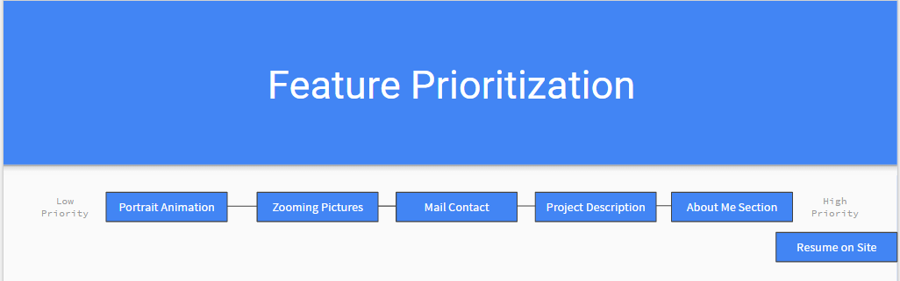

Competitor Analysis
The competitor analysis is where a designer looks up other works that is similar to their work and possibly serve other features. The sites I looked at were mostly students' portfolios since I am a student as well. Their portfolios shows certain features that I was lacking and made me consider other features and some sort of new ideas that I could add onto my site.

Click here for my Competitior Analysis
User Interviews
Conducting User Interviews helped me understand the general target of my audience and cater my website towards it. Even though my interviewees were students, they all want to look for jobs so I assume that they want a portfolio to be professional.
Click here for my User Interviews
Feature Value Matrix
The feature Value Matrix is where I list some of the features and determine the user values,business values, and technical effort for each of the matrix. The scores would be added up and the scores that each feature will show how much of a priority that the feature has. What I found was that having a resume and an about me section in my page since the whole portfolio site revolves around who I am and my credentials.
Click here for my Feature Value Matrix
Feature Prioritization
The Feature Priorization is the visual representation that is based on the feature value matrix that I have made earlier. It helps me get a clearer picture on features I need to handle with first and moving on to the next feature and so on.
Click here for my Feature Prioritization
Cognitive Walkthrough
The cognitive walkthrough is where I ask someone to go through my website and I ask them to do certain tasks and see if they can do it. The walkthroughs were great because it helped me see problems in my site that I would not have spotted myself. An example of the picture "zoom"; people would click on an image to zoom first, which would work but it would have been better if it was explicity told to me.

Click here for my Cognitive Walkthrough
User Stories
The User Stories are where I create what users may experience on certain features based on what I have learned through the user interviews.

Click here for my User Stories
User Tests
The User Tests are 2 click tests that help me verify that the features I have are working and users can clearly understand what to do.
Summary of Findings
Some of the things that I have found in my findings is that putting animation into a portfolio can be quite powerful as it engages the users immediately. From what I have seen in the competitors' portfolios,their use of animations made their portfolio more lively. The analysis also help me appreciate the color scheme as it also helps users stay on my portfolio. If I had a unappealing color choice, then most of the users would not even bother to look at my portfolio. The competitor analysis has helped me find new ways of making my portfolio better.
When I was doing in feature value matrix, I found out that having a resume and an about me is key to my portfolio since it helps me stand out from the rest of the other portfolios. I also made my images being able to be opened with a full image is important as well for other users to see what I am presenting. Something that I did not add in the matrix but thought about as I made it was navigation. I assumed some sort of navigation would be in any form portfolio but ease of access is important for any site that I may have added it in.
Incorporating Findings
Some of the changes that I have already made was the text in the Resume page. I initially had a some text that said "Here is my Resume" just so that I can have some text there and it would not be just a resume. During a cognitive review session, the interviewee told me that why is there a random text at the resume page. I said the things that I mentioned above and the interviewee replied back to me that it was not necessary to put text there as it seemed out of place. I took his word and see what it looked like and I actually agree that the text should not be there itself. I see that it makes the resume have less noise around it and makes it the center focus of the page.
Even still, I would like to make my resume fit more naturally in my portfolio. As of right now, it is just embedded within the pdf and it has the pdf viewer on it. The black border that naturally comes with the pdf viewer makes it hard for the resume to stand out even though I got rid of the text. I could try to take a picture of the resume and put that into the site, but it may not look as pretty as that. I will look to see if I cand find a better solution than that. I also need to find out how to use less text on my skills page. It seems there is a bit too much info for users to digest; it is better if they did not have to read all that text.